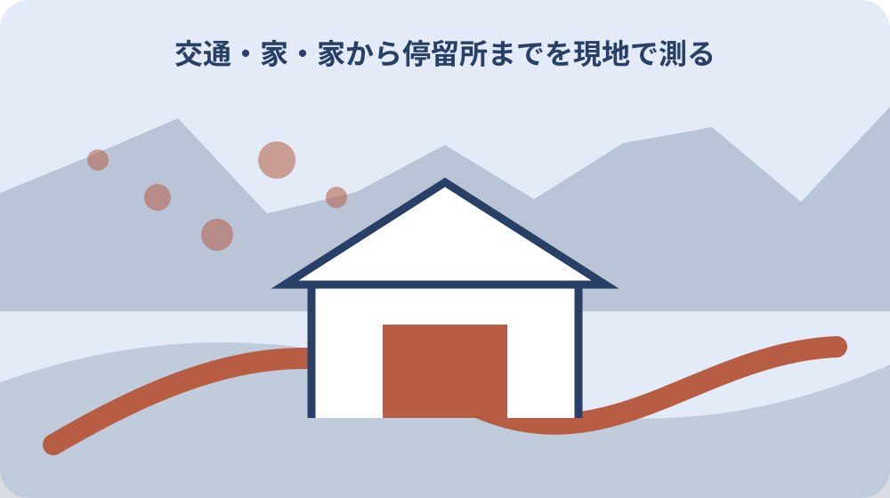
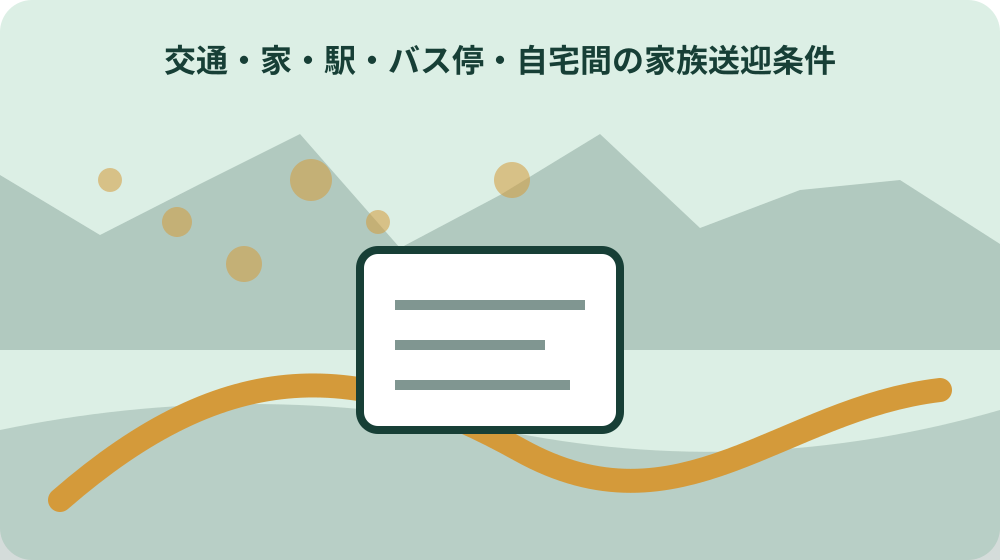

先に結論を確認する
この記事の答え：いいえ。森町公式ページは誰でも利用できると案内しています。ただし便ごとの運行日、時刻、予約要否は別に確認してください。
森町で最初に照合する条件：家から停留所、停留所から鉄道駅、駅から目的地を別の区間にし、各区間の担当者と時刻を記す。
移動目的と到着時刻を一つに絞る
送迎図を作る前に、通院、通学、買物、役場手続きなど今回の目的を一つに絞ります。同じ目的地でも受付時刻と帰宅希望時刻が違えば使える便は変わります。まず「何時までに、どこへ到着するか」を図の上部へ書きます。
森町の公共交通案内は町営バス、地域タクシー、鉄道・民間路線バス・タクシーを分けています。すべてを一本の路線のようにつながず、今回使う交通手段だけを区間ごとに選びます。候補段階の手段は点線で示します。
診察の終了時刻が読めない通院では、復路を一便に固定しません。早く終わった場合、標準的な場合、遅れた場合の三つの出発時刻を置き、家族へ連絡する時点を決めます。到着目標と帰宅予定を別欄にします。
時刻表は移動目的に合う便を探す資料で、家族が必ず送迎できることを保証しません。公共交通の候補と家族の担当候補を別々に確認し、両方が確定したときだけ実行線を実線へ変えます。
目的地が複数ある日は一枚へ詰め込まず、最初の到着先と最後の出発先を明記した別図にします。途中の予定変更で帰路が変わるなら、変更を決める人と連絡期限を先に置き、本人だけへ判断を集中させません。
自宅・停留所・駅を三つの点で置く
図の基本は自宅、利用する停留所、乗り継ぐ鉄道駅または目的地の三点です。住所、停留所名、駅名を正式表記で書き、似た名称や上下方向を取り違えないようにします。検索結果の通称だけを図へ残しません。
自宅から停留所まで家族が送る場合も、徒歩区間が全くないとは限りません。駐車場所から乗り場、道路横断、待合場所を現地で確認します。車を止められない停留所なら、乗降だけで安全に引き渡せる場所を別に探します。
駅で乗り継ぐ場合は、降車地点から改札や次の乗り場までの経路を加えます。バス到着時刻と列車発車時刻の差だけでなく、歩行、切符、トイレ、混雑に必要な時間を見込みます。初回利用は余裕を長めに取ります。
地図上の直線距離を移動時間に置き換えません。森町では山間部、川、坂、狭い道路で実際の経路が変わります。家族の車、徒歩、車椅子など移動方法を線ごとに書き、実走または現地確認した日を添えます。
同じ停留所名でも道路の反対側や上下方向で乗り場が違う場合があります。往路と復路の乗り場写真を別にし、撮影方向と安全に待てる位置を記します。道路横断が必要なら信号や横断歩道までの経路も加えます。
町営バス二路線を混ぜずに選ぶ
森町営バスには大河内線と吉川線の二路線があります。路線名を省いて「町営バス」とだけ書くと、停留所や便を取り違えるおそれがあります。図には路線名、乗車停留所、降車停留所を一組で記します。
町公式ページは路線図と時刻表を別資料で公開しています。路線図で自宅に近い停留所を見つけた後、時刻表でその停留所に該当する便を確認します。地図に載ることだけで毎日同じ時刻に運行すると判断しません。
二路線を途中で乗り継ぐ案を作る場合は、同じ場所で乗り換えられるか、運行日と時刻が合うかを確認します。路線図上で線が近く見えることを接続保証にせず、町の問い合わせ先へ停留所名を示して確認します。
町営バスは誰でも利用できますが、利用対象に制限がないことと、希望時間の便があることは別です。利用者欄は対象確認済み、便欄は時刻確認済みとして分け、片方の確認で両方を完了にしません。
定期券や回数券を使う場合は販売場所、対象路線、購入金額を現行案内で確認します。乗車券を持つことと予約便の予約完了は別なので、図には乗車券準備と便予約を二つの確認欄で示します。

予約が必要な便を図へ明記する
大河内線と吉川線には事前予約が必要な便があります。時刻表の便名だけを転記せず、予約要否、予約先、締切、予約者名を図の横へ書きます。予約が必要か分からない便は「未確認」として家族送迎を残します。
町公式ページは予約バスの予約手順をPDFで公開しています。手順を確認した日と資料の版を記し、過去に利用したときの方法をそのまま使いません。電話番号や受付時間は実行前に現行資料で再確認します。
予約を依頼しただけで確定にせず、予約日、対象便、乗降停留所、人数、回答内容を記録します。家族二人が別々に予約することを防ぐため、予約担当を一人にします。変更や取消をした場合も元の記録を上書きしません。
帰りの終了時刻が不確定なら、予約便を使える条件と使えない場合の代替を分けます。診察が長引いた場合の連絡期限を決め、予約便へ間に合わないと分かった時点で誰が取消や迎えを手配するかを図へ加えます。
予約内容を本人が覚えている前提にせず、紙または安全な共有画面へ便、日付、乗降場所を残します。予約担当と送迎担当が違う場合は確定連絡を双方へ送り、未読のまま当日を迎えない確認方法を決めます。
家から停留所までを現地で測る
自宅から停留所までの距離は地図だけでなく実際の経路で確認します。坂、段差、側溝、横断、街灯、雨を避ける場所を見ます。元気な家族の徒歩時間を高齢者本人の所要時間として使いません。
家族が車で送る場合は、出発準備、車への乗降、荷物、停留所での待ち時間を含めます。発車時刻の直前到着を前提にせず、道路混雑や踏切も見込みます。車を置いたまま待てるかも現地条件です。
夜間や雨天は昼間と同じ経路が安全とは限りません。復路の停留所から自宅まで暗い場合は、家族が停留所へ迎える案を基本にし、迎えが遅れたときの待合場所と連絡方法を決めます。
現地確認の結果は、経路写真、危険箇所、確認日として残します。私有地や他人の駐車場を送迎場所にしないよう、道路の管理や利用可否が不明なら町や管理者へ尋ねます。
季節によって日の入り、落葉、路面凍結、草の繁茂で歩きやすさが変わります。一度の晴天時確認を年間条件にせず、利用頻度が高い場合は雨天と夕方にも同じ区間を確認し、代替の乗降場所を比べます。
停留所と鉄道駅の乗継余裕を取る
森町の公共交通案内は鉄道、民間路線バス、タクシーをリンク集として分けています。町営バスから鉄道へ乗り継ぐ場合、町営バス時刻表と鉄道事業者の現行時刻を同じ利用日で確認します。
乗継余裕は到着と発車の時刻差だけではありません。降車、移動、切符、エレベーター、乗り場確認を含めます。遅延した場合に次の列車へ移れるか、最終便では代替があるかも確認します。
時刻表の改定日は事業者ごとに異なります。一方だけ新しい時刻表へ更新し、もう一方を古いまま使わないよう、図には資料ごとの確認日を書きます。印刷物を家族へ渡す場合もURLを添えます。
迎えの家族には列車到着予定だけでなく、利用者が駅のどの出口へ出るかを伝えます。到着が遅れたときは運転中の家族へ直接連絡させず、別の連絡担当を置くと安全に状況を共有できます。
乗継に失敗した場合は、次便の時刻、待合場所、連絡先を図の余白へ置きます。本人がスマートフォンを操作できない場合も想定し、駅員や窓口へ見せられる目的地名と家族連絡先を紙で準備します。
家族送迎の担当と引渡場所を決める
送る人、迎える人、予約する人、当日の連絡を受ける人を分けます。一人がすべて担う場合も役割欄を埋め、仕事や体調で動けなくなったときの代替担当を決めます。「誰か行く」という共有で終えません。
引渡場所は自宅玄関、停留所の待合位置、駅出口など具体的にします。車両の色やナンバーを不用意に公開せず、家族内の連絡に必要な範囲で共有します。混雑場所では立ち止まる場所を先に決めます。
本人が一人で待てる時間、歩行補助、荷物、服薬時刻などを送迎条件へ加えます。医療情報の詳細は交通図へ書き込まず、必要な緊急連絡情報だけを別の保護された資料へ置きます。
担当変更は口頭だけで済ませず、図の版と変更時刻を更新します。迎えの人が変わったら本人、送る人、予約担当へ同じ内容を伝え、古い画像が家族のチャットに残っていることを前提に最新版を示します。
送迎車へ乗れなかった場合の待機時間を決めます。本人が停留所や駅から勝手に歩き始めないよう、待つ場所、何分後に誰へ電話するか、連絡不能なら次に何をするかを家族の能力に合わせて共有します。
往路と復路を別の線で作る
往路で使えた便が復路にもあるとは限りません。図では往路を一方向、復路を別方向に描き、運行曜日、発着時刻、予約要否をそれぞれ記します。片道の確認だけで一往復を完成させません。
帰宅時刻が決まらない場合は復路候補を複数置きます。最も早い便、標準便、最終候補を並べ、それぞれに間に合う連絡締切を付けます。家族迎えへ切り替える判断者も明記します。
行きは家族送迎、帰りは公共交通という組合せもあります。家族が車をどこに置くか、本人が鍵を持つか、帰宅後に連絡するかなど、交通以外の生活条件も一往復の図へ加えます。
最終便に乗れない場合のタクシー、宿泊、家族迎えを検討しますが、利用可能区域や料金を推測しません。公共交通案内から当事者の公式情報へ進み、当日の連絡先と支払方法を確認します。
復路だけ家族の車を使う場合は、往路で車をどこへ置いたかも確認します。別の家族が迎えるならチャイルドシートや歩行補助具など必要な装備が車にあるかを見て、移動担当だけを交代させません。
地域タクシーの対象住所を確認する
森町公式案内は一宮地区と園田地区の地域タクシーを分けて掲載しています。この事実から町内全住所で同じ地域タクシーを使えるとは判断できません。自宅住所と乗降場所を示して対象区域を確認します。
対象地区に住むこと、希望場所へ行けること、希望時刻に予約できることは別の条件です。利用対象、運行範囲、運行日、予約期限、運賃を公式案内で一項目ずつ確認し、図へ根拠URLを添えます。
町営バスの代替として地域タクシーを置く場合、同じ停留所から同じ時刻に出るとは限りません。乗降場所と予約方法を別線で描き、町営バスが運休した時に自動的に利用できると決めません。
住所が対象境界付近、通院先が町外、家族宅を経由するなど個別条件がある場合は、企画課企画係へ経路を具体的に伝えます。回答日と担当部署を残し、別の家族へ条件を一般化しません。

迎えに行けない場合の代替を置く
家族が迎えに行けない場合を失敗ではなく、最初から用意する分岐として図へ置きます。次の公共交通、地域タクシー、一般タクシー、目的地で待つ選択肢を並べ、利用条件が確認できたものだけを実線にします。
代替手段には費用、予約、待ち時間、本人が一人で対応できる範囲を記します。安い順だけで選ばず、夜間の安全、連絡のしやすさ、乗降の負担を家族で比べます。現金や乗車券の準備も確認します。
家族の車が故障した場合と、本人の予定が遅れた場合では代替の開始地点が異なります。自宅から出られない場合、駅に到着済みの場合、目的地に残る場合の三地点で連絡先を決めます。
緊急時と通常の送迎変更を分けます。体調急変や事故では公共交通の代替図だけで対応せず、必要な緊急連絡を優先します。通常の遅れでは予約取消、本人への連絡、次便確認の順を決めます。
更新日と連絡先を家族へ渡す
図には町営バス時刻表の基準日、鉄道等の確認日、家族担当の確認日を別々に書きます。町ページには2025年4月1日現在の時刻表が掲載されていますが、実行日に改定がないかを再確認します。
森町の公共交通に関する問い合わせ先は企画課企画係、電話0538-85-6305です。運行事業者の問い合わせ先が別に示される場合は、制度の質問と当日の運行確認を分けて連絡します。
家族へ渡す図は版番号を付け、古い版を黙って上書きしません。変更点を短く書き、誰が本人へ説明したかを残します。紙で持つ本人とスマートフォンで見る家族が同じ版を参照できるようにします。
再確認日は前日と出発前に置きます。前日は予約、時刻、担当者、天候を確認し、出発前は運休と本人の体調を確認します。毎回最初から作り直さず、変わった条件だけを更新します。
大石の視点：年間利用者数より玄関からの一往復を見る
公的事実として、森町営バスには大河内線と吉川線があり、予約が必要な便があります。町は地域タクシーや鉄道等を別案内にし、現在の時刻表、路線図、予約手順を公開しています。
ここからは私見です。小さな不動産業者として交通利便性を見るとき、路線が近い、年間利用者が多いという説明より、玄関から停留所へ安全に着き、帰宅できる一往復を現地で確かめる方が重要だと考えます。
家族送迎を前提にすれば暮らせるという判断も、担当者の仕事、年齢、車、夜間対応が変われば続かないことがあります。公共交通と送迎を競合させず、双方が使える条件と使えない条件を一枚に置くことが選択肢を守ります。
今日できる一歩は、次の外出一件を選び、自宅、停留所、目的地を三点で書くことです。往路と復路、予約要否、送る人、迎えられない場合の代替まで埋め、空欄の問い合わせ先を決めます。